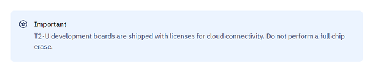
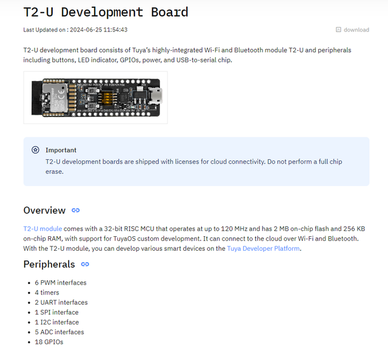
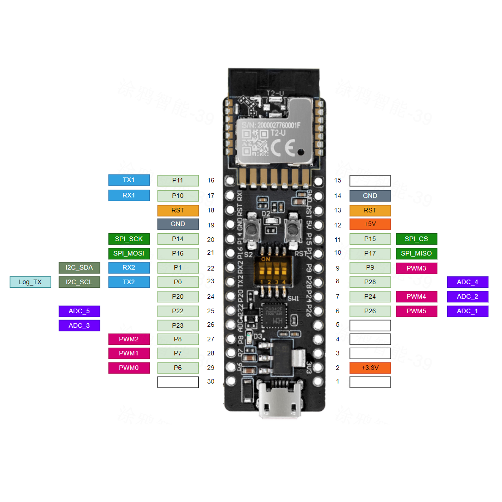
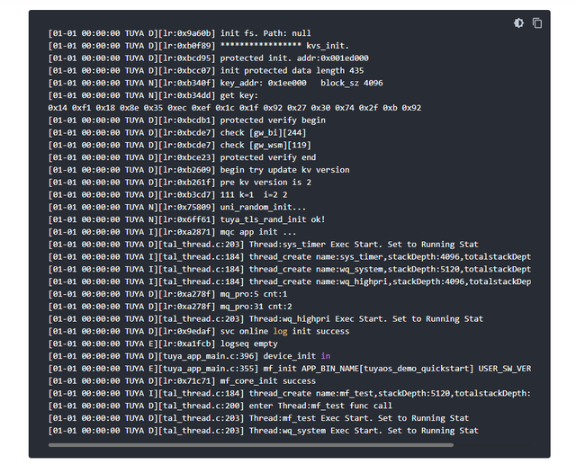
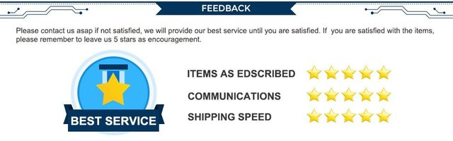

WiKi： https://developer.tuya.com/en/docs/iot-device-dev/T2-U-development-board?id=Kckeahvfhu7v0


Support 802.11b, 802.11g, and 802.11n wireless standard.
Channels 1 to 14 at 2.4 GHz.
Support security protocols including WEP, WPA/WPA2, WPA/WPA2 PSK (AES), and WPA3.
A maximum output power of +16 dBm in 802.11b.
Support three Wi-Fi modes: station mode, AP mode, and dual mode.
The PCB antenna peak gain is 2.2 dBi.
Fully compliant with Bluetooth LE 5.1 standard.
Priority-based Wi-Fi and Bluetooth coexisting control module for real-time priority and dispatch.
The transmit power in Bluetooth mode is 6 dBm.
The PCB antenna peak gain is 2.2 dBi.
T2-U development board defaults to TuyaOS development. It also supports development using Tuya Connect Kit, Arduino, and MicroPython.
See the following documentation in order.
Download TuyaOS sample
Option 1: Download TuyaOS — T2-U development kit from Tuya Wind IDE for free.
Option 2: Download tuyaos-development-board-t2 project from GitHub.
The sample includes:
Sample minimal system to implement cloud connectivity.
Development kit for RGB strip lights.
Development kit for universal infrared remote control.
Examples of using peripherals including ADC, GPIO, I2C, PWM, SPI, timer, and watchdog.
Sample code for Wi-Fi features, including station mode, AP mode, scan, and low power.
Sample code for Bluetooth LE central and peripheral modes.
Sample code for Bluetooth LE and Wi-Fi remote controls (Tuya FFC).
RTOS-related thread, mutex, semaphore, message queue, and software timer.
Sample code for HTTP file download.
Drivers and sample code for energy metering chips including BL0937, BL0942, HLW8032, and HLW8012.
Drivers and sample code for RGB light chips including WS2812, WS2814, YX19036, SM16703p, SM16704pk, and SK6812.
Drivers and sample code for light chips including PWM, CCT, SM2135E, SM2135EX, SM2x35EGH, KP1805X BP1658CJ, and BP5758D.
More samples will be added over time. You can check Tuya Wind IDE and T2-U development framework on GitHub for updates.
T2-U development board is pre-flashed with a demo minimal system for cloud connectivity (apps/tuyaos_demo_quickstart). You can connect the board to the cloud using the Smart Life app. You can also flash the edited demo minimal system or your custom firmware to the board for debugging.
T2-U development boards are shipped with licenses for cloud connectivity. Do not perform a full chip erase. Otherwise, the board cannot connect to the cloud.
Default baud rate of the serial port log: 115200.

